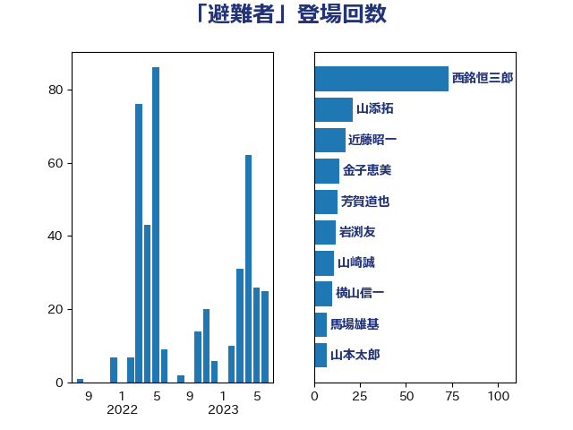

単語「避難者」

| 西銘恒三郎 | 自由民主党 | 73 回 |
| 山添拓 | 日本共産党 | 21 回 |
| 近藤昭一 | 立憲民主党 | 17 回 |
| 金子恵美 | 立憲民主党 | 14 回 |
| 芳賀道也 | 国民民主党 | 13 回 |
| 岩渕友 | 日本共産党 | 12 回 |
| 山崎誠 | 立憲民主党 | 11 回 |
| 横山信一 | 公明党 | 10 回 |
| 馬場雄基 | 立憲民主党 | 7 回 |
| 山本太郎 | れいわ新選組 | 7 回 |
| 高橋千鶴子 | 日本共産党 | 5 回 |
| 渡辺博道 | 自由民主党 | 5 回 |
| 鎌田さゆり | 立憲民主党 | 4 回 |
| 竹谷とし子 | 公明党 | 4 回 |
| 石垣のりこ | 立憲民主党 | 4 回 |
| 新妻秀規 | 公明党 | 4 回 |
| 山口俊一 | 自由民主党 | 4 回 |
| 階猛 | 立憲民主党 | 3 回 |
| 輿水恵一 | 公明党 | 3 回 |
| 若松謙維 | 公明党 | 3 回 |
| 舩後靖彦 | れいわ新選組 | 3 回 |
| 熊谷裕人 | 立憲民主党 | 3 回 |
| 渡辺創 | 立憲民主党 | 3 回 |
| 岬麻紀 | 日本維新の会 | 3 回 |
| 小熊慎司 | 立憲民主党 | 3 回 |
| 吉田宣弘 | 公明党 | 3 回 |
| 青木愛 | 立憲民主党 | 2 回 |
| 鈴木馨祐 | 自由民主党 | 2 回 |
| 赤木正幸 | 日本維新の会 | 2 回 |
| 谷合正明 | 公明党 | 2 回 |
| 谷公一 | 自由民主党 | 2 回 |
| 菅家一郎 | 自由民主党 | 2 回 |
| 福重隆浩 | 公明党 | 2 回 |
| 石井苗子 | 日本維新の会 | 2 回 |
| 田中健 | 国民民主党 | 2 回 |
| 漆間譲司 | 日本維新の会 | 2 回 |
| 早坂敦 | 日本維新の会 | 2 回 |
| 山際大志郎 | 自由民主党 | 2 回 |
| 尾崎正直 | 自由民主党 | 2 回 |
| 小倉將信 | 自由民主党 | 2 回 |
| 古川元久 | 国民民主党 | 2 回 |
| 伊藤忠彦 | 自由民主党 | 2 回 |
| 高橋光男 | 公明党 | 1 回 |
| 青山大人 | 立憲民主党 | 1 回 |
| 鈴木敦 | 国民民主党 | 1 回 |
| 金子恭之 | 自由民主党 | 1 回 |
| 金城泰邦 | 公明党 | 1 回 |
| 道下大樹 | 立憲民主党 | 1 回 |
| 西村智奈美 | 立憲民主党 | 1 回 |
| 荒井優 | 立憲民主党 | 1 回 |
| 舟山康江 | 国民民主党 | 1 回 |
| 羽田次郎 | 立憲民主党 | 1 回 |
| 竹内真二 | 公明党 | 1 回 |
| 神谷裕 | 立憲民主党 | 1 回 |
| 神津たけし | 立憲民主党 | 1 回 |
| 石井章 | 日本維新の会 | 1 回 |
| 片山さつき | 自由民主党 | 1 回 |
| 武部新 | 自由民主党 | 1 回 |
| 櫛渕万里 | れいわ新選組 | 1 回 |
| 柳ヶ瀬裕文 | 日本維新の会 | 1 回 |
| 林芳正 | 自由民主党 | 1 回 |
| 東国幹 | 自由民主党 | 1 回 |
| 本庄知史 | 立憲民主党 | 1 回 |
| 斎藤洋明 | 自由民主党 | 1 回 |
| 掘井健智 | 日本維新の会 | 1 回 |
| 庄子賢一 | 公明党 | 1 回 |
| 川田龍平 | 立憲民主党 | 1 回 |
| 岡田直樹 | 自由民主党 | 1 回 |
| 山谷えり子 | 自由民主党 | 1 回 |
| 山本佐知子 | 自由民主党 | 1 回 |
| 尾身朝子 | 自由民主党 | 1 回 |
| 小沢雅仁 | 立憲民主党 | 1 回 |
| 宮路拓馬 | 自由民主党 | 1 回 |
| 大塚耕平 | 国民民主党 | 1 回 |
| 大串博志 | 立憲民主党 | 1 回 |
| 塚田一郎 | 自由民主党 | 1 回 |
| 城井崇 | 立憲民主党 | 1 回 |
| 和田政宗 | 自由民主党 | 1 回 |
| 吉田久美子 | 公明党 | 1 回 |
| 吉田とも代 | 日本維新の会 | 1 回 |
| 古賀之士 | 立憲民主党 | 1 回 |
| 古川禎久 | 自由民主党 | 1 回 |
| 古川康 | 自由民主党 | 1 回 |
| 加田裕之 | 自由民主党 | 1 回 |
| 伊藤岳 | 日本共産党 | 1 回 |
| 中川正春 | 立憲民主党 | 1 回 |
| 下野六太 | 公明党 | 1 回 |
| 一谷勇一郎 | 日本維新の会 | 1 回 |